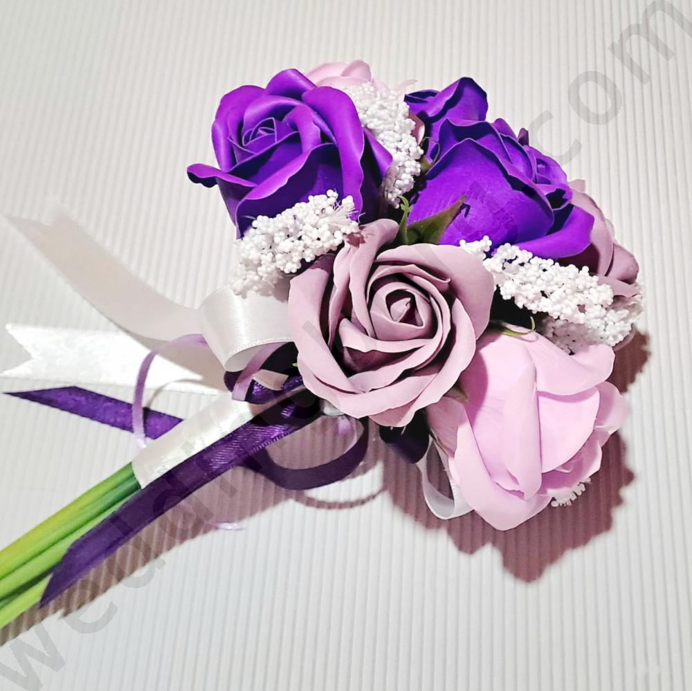
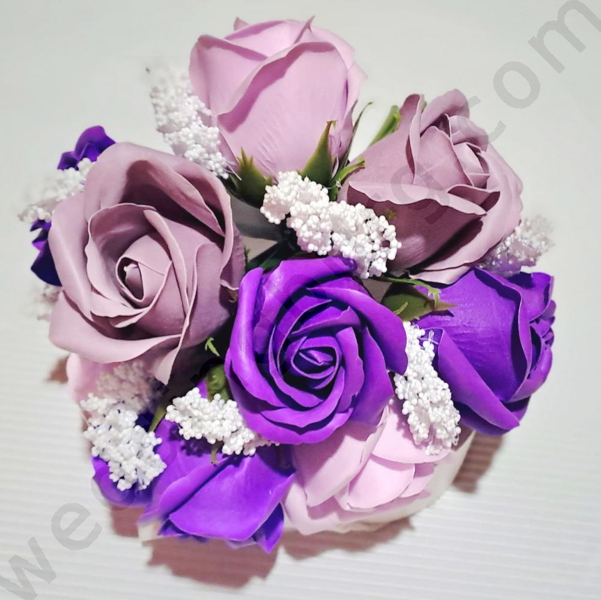

🌺 Булчински букет за хвърляне с лилави рози

Малък, Булчински букет предназначен за хвърляне към шаферките и неомъжените дами на сватбеното тържество.
Букета е ръчно изработен с няколко нюанса лилави рози и араннжиран със сатенени панделки.
Като всяка роза, лилавите рози също са символ на любовта и романтиката.
Изборът на нестандартен цвят като лилаво може да отразява индивидуалността и стила на булката.
Този букет може да бъде израз на нейния уникален вкус и представяне на красотата.
Сватбен букет изработен от големи и малки декоративни рози в лилаво и бяло.
Aранжиран с перли и обгърнат от разкошен тюл. Дръжката е изцяло декорирана с перли.
Размер: диаметър 25см. :
Телефон0896748074 :
Еmail: elizabg.office@gmail.com
Линк към сайта
